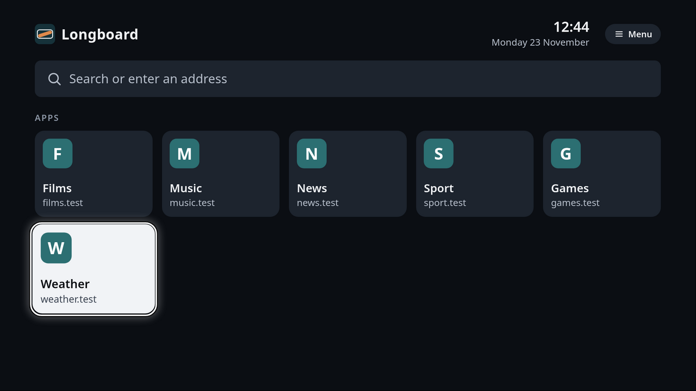
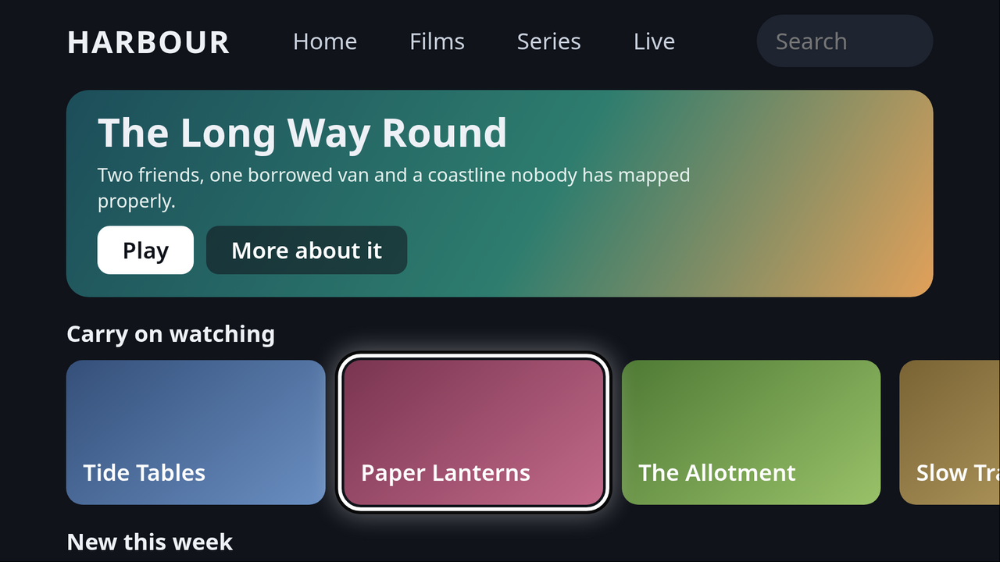
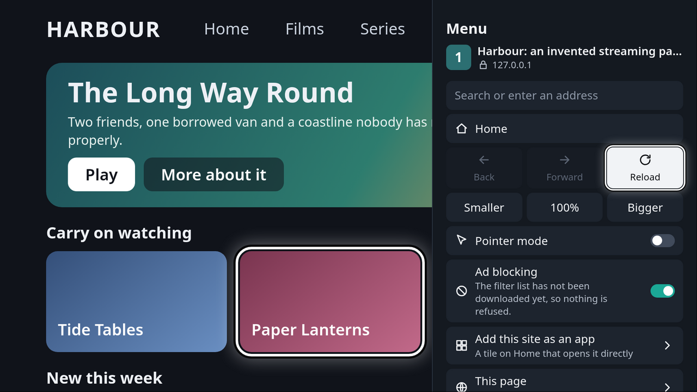
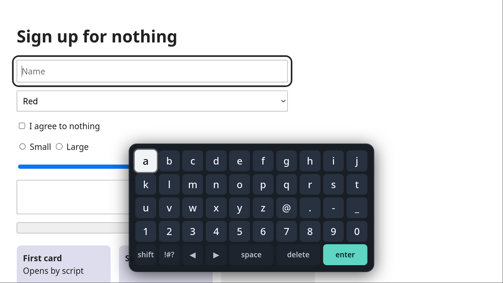

Any site as an app
Add a site to Home and to your TV's app list. It opens like an app, and can keep its own sign-ins.
Drive any website from the couch with a remote, a game controller or a keyboard. Longboard moves a highlight from one thing to the next, so six buttons are enough.
Download for Linux See the source
Free and open source (GPL-3.0). No telemetry. Early: expect rough edges.

Type an address or a search on Home, or pick a tile. It is a whole browser built on Chromium, not a list of supported services.
Longboard finds what can be pressed on the page. The arrows move between those things, OK presses, Back goes back. Nothing to set up per site.
While a video plays, OK pauses, left and right seek, and up and down bring up the player's own controls.

Add a site to Home and to your TV's app list. It opens like an app, and can keep its own sign-ins.

Address, zoom, tabs, history, reader view, find on the page, ad blocking for the site in front, and Settings.

An on-screen keyboard comes up on text fields. Or type from your phone, or speak.
Any site should be usable. These are the ones somebody has sat through with a remote or a script; the status file has the dates, the detail and the rough spots.
| Site | State | Notes |
|---|---|---|
| YouTube | Works, in its TV interface | Longboard opens the interface the site makes for TVs, with previews |
| Netflix | Works | Browsing, search, playback and the progress bar |
| Prime Video | Works | With a reviewed profile |
| Disney+ | Works | |
| Apple TV | Works | |
| Spotify | Works | With a reviewed profile |
| Sportsnet+, TSN | Work | Live channels play |
| Players embedded from another site | Work | OK on the player takes it full screen, where the remote drives it |
| Rogers Xfinity Stream | Does not play | The service refuses playback on Linux in any browser we tried (issue 1) |
| The 50 most-visited websites | Navigable | The highlight gets around each, signed out (scorecard) |
Picture quality is the service's decision. Several services send a browser on Linux a smaller picture than they send a TV app, because of how protected playback works there. Longboard does not work around that.
Linux with a desktop session, on a 64-bit Intel/AMD or ARM machine. These links always fetch the newest release.
chmod +x Longboard-x86_64.AppImage
./Longboard-x86_64.AppImageReleases are not signed. GitHub shows a SHA-256 digest beside each file on the release page, where the release notes are too. The ARM packages are built and tested by script and have not yet been tried on an ARM TV box.
| Arrows, D-pad | Move the highlight; scroll when there is nothing to move to |
|---|---|
| OK, Enter, A | Select. On a text field: the on-screen keyboard |
| Back, Escape, B | Back; Home from a site's first page |
| Menu key, Start, or Up twice at the top of a page | The menu |
| F2, pressing the right stick | The on-screen pointer, on and off |
No. It is a browser. It holds no content and unlocks nothing: you need your own accounts, and each site decides what it shows you.
No, and it will not. Protected video plays through the unmodified standard component. Ad blocking only refuses requests that a public filter list names; it does nothing inside a video stream. The reasons are written down in the guardrails.
What it is: the engine it is built on, and its own name. Two exceptions: a site with an interface made for TVs is told the engine TV apps run on, with Longboard as the device, because that is what makes the site serve that interface; and a site with a larger layout for browsers on TVs is told, after everything else, that Longboard is on one. It never claims to be another maker's device.
Safe Browsing (nothing warns about known phishing or malware sites), sync, translation, and tabs that survive a restart. Releases are not signed. The full list is kept honest.
Anything the system sees as a keyboard, which is how most remotes arrive, or as a game controller. Buttons can be given other jobs in Settings.
Linux only today. A version for TVs that run Android has been researched, not built.
One person in spare time. The code is written with Claude Code, an AI coding agent, directed and tested by the owner, who is responsible for what is released.
Open an issue. For a site, the address and what you pressed are enough to start.